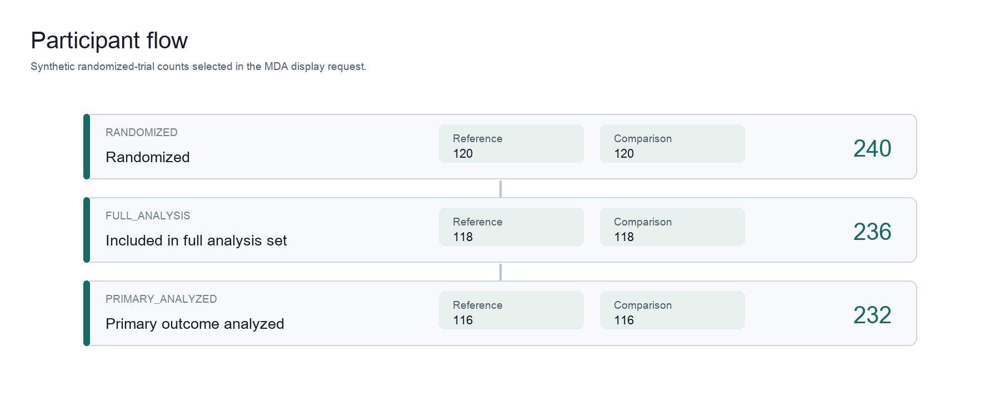
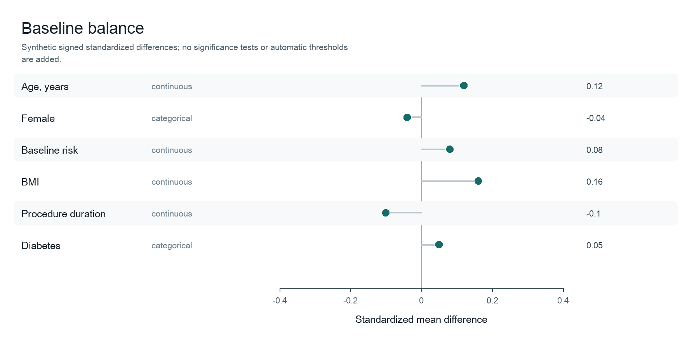
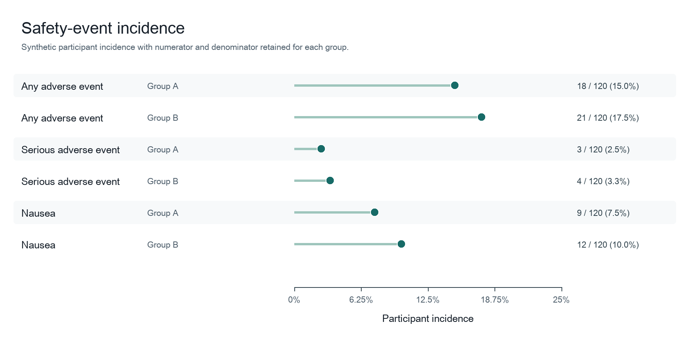

Generated
260↓Randomized
240↓
260↓Randomized
240↓
Arm A
120Arm B
120
↓120Arm B
120
Analyzed
120Analyzed
120
120Analyzed
120
虚拟数据 · 虚拟运行 · 示意结果
两组平行设计，240 名虚构受试者。数据不对应任何真实患者或研究。
受试者流程、基线平衡与缺失模式在建模前同步生成。
角色和方法来自人工确认；演示中使用预设选择完成冻结。
所有计划、阻断、失败和跳过任务均保留在同一任务登记中。
虚拟运行仅用于展示状态和交付格式。
以下估计值和置信区间均为虚构演示。
亚组效应和轨迹数据均为虚构演示。
曲线、风险比和文件内容均为虚构演示。
一次确认分析定义，随后并行展开多个结局与预设亚组任务。
清点变量、受试者、访视与缺失模式。
指定分组、结局、协变量、亚组与分析集。
将确认后的要求转为可追踪的并行任务。
执行总体、亚组、纵向与时间结局分析。
汇总估计值、区间、图形、表格与报告。
从研究配置到任务执行，再到结果与报告，全部保留在同一研究工作区中。
读取数据结构，检查受试者流程、基线平衡与缺失模式。
界面示意 · 虚拟研究数据研究者确认变量角色、分析集和亚组定义后，生成带版本记录的冻结请求。
界面示意 · 虚拟研究数据多个结局与预设亚组一次展开；就绪、阻断和跳过任务均可追踪。
界面示意 · 虚拟任务


区间估计、受试者流程、基线平衡与安全性结果在同一工作区生成。
App 实际输出 · 虚拟数值交付可核验的 SVG 图形、CSV 表格、双语 HTML 与来源清单。
真实输出格式 · 虚拟内容本页所有数据、运行状态和统计结果均为演示用途。MDA 不用于医疗诊断或个体临床决策。